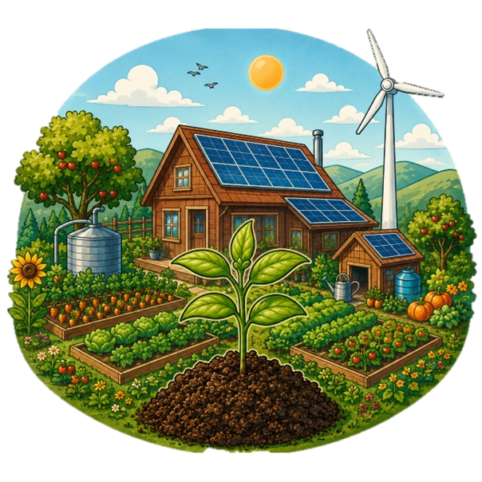
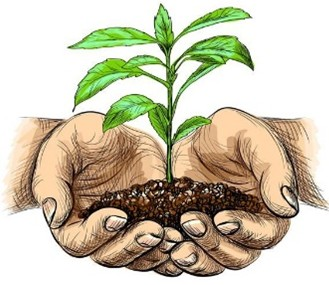

En Green House Solar nos dedicamos al diseño y desarrollo de invernaderos solares totalmente funcionales, enfocados en la automatización y el uso de energía renovable. Nuestro sistema aprovecha la energía del sol para alimentar diferentes procesos inteligentes que facilan el monitoreo y cuidado de los cultivos. Buscamos optimizar el manejo de las cosechas mediante tecnologías que controlan variables importantes como la temperatura, la humedad y el riego, permitiendo un crecimiento más saludable y eficiente de las plantas. Nuestro objetivo es impulsar una agricultura moderna, sostenible y rentable, ayudando a los campesinos a producir más, reducir costos y proteger el medio ambiente.

Nuestro proyecto nace con el compromiso de crear una agricultura más limpia, inteligente y sostenible. A través del aprovechamiento de la energía solar, reducimos la dependencia de fuentes eléctricas contaminantes y promovemos prácticas amigables con el planeta. El sistema del invernadero permite aprovechar mejor los recursos naturales, disminuyendo el desperdicio de agua y mejorando las condiciones de cultivo sin afectar el equilibrio ambiental. Además, buscamos fomentar una conciencia ecológica en las comunidades campesinas, demostrando que el progreso agrícola también puede ir de la mano con la protección de la naturaleza. En Green House Solar creemos que cada cultivo puede convertirse en una oportunidad para cuidar la tierra, producir de manera responsable y construir un futuro más verde.

"El futuro del campo nace donde la naturaleza y la innovación se unen."